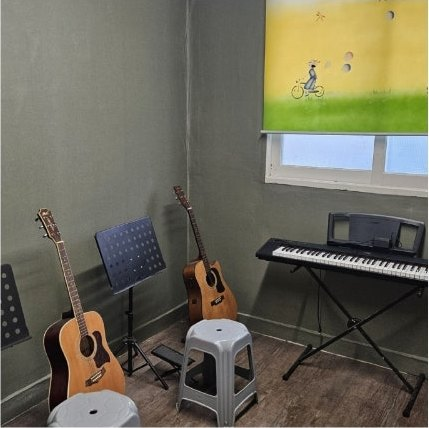
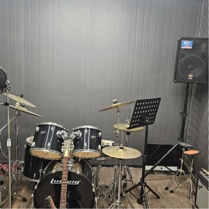
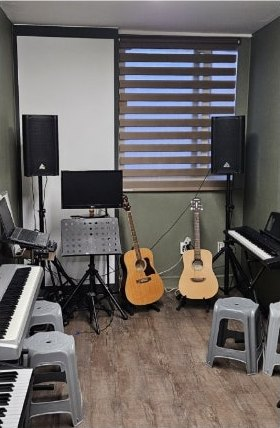
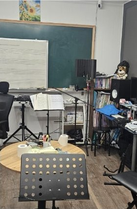
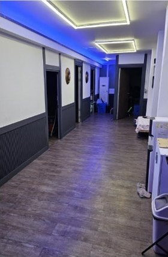

01
보컬
호흡과 발성부터 잡습니다. 음역대를 억지로 늘리기보다 지금 목소리로 가장 잘 나오는 구간을 먼저 찾습니다.
- 복식호흡 · 발성 교정
- 음정 · 박자 트레이닝
- 곡 해석 · 감정 표현
악보를 못 봐도 괜찮습니다. 2000년부터 여수 도원로에서 이어온 박준화실용음악학원은 한 사람의 목표와 속도에 맞춘 1:1 맞춤 커리큘럼으로 첫 곡부터 무대까지 함께합니다.
전라남도교육청 등록 학원 · 2000년 개원 · 동시 수업 정원 8명
여수에서 쌓아온 시간
보컬부터 작곡까지
개인 맞춤 지도
동시 수업 정원 · 소수정예
“음악은 재능이 아니라
제대로 된 순서로 배우는 기술입니다.”
처음 학원 문을 여는 분들이 가장 많이 하는 말은 “저는 음치예요”, “손이 안 따라줘요”입니다. 하지만 대부분은 재능의 문제가 아니라, 자기에게 맞지 않는 순서로 배웠기 때문입니다. 박준화실용음악학원은 첫 상담에서 목표와 현재 실력을 함께 진단하고, 그에 맞는 곡과 훈련부터 시작합니다.
박준화실용음악학원
여수 도원로 · 2000년 개원
About
큰 규모로 많은 인원을 받는 대신, 동시에 수업하는 인원을 적게 유지합니다. 강사가 수강생 한 명 한 명의 진도와 컨디션을 기억할 수 있는 규모여야 “다음 주에 뭘 해야 하는지”가 분명해지기 때문입니다.
“이 곡 하나” 부터 입시·오디션까지. 목표에 따라 커리큘럼이 완전히 달라집니다.
동시 수업 정원을 제한해 연습실과 강사의 시선이 분산되지 않습니다.
이론을 다 떼고 시작하지 않습니다. 곡을 만지면서 필요한 이론을 붙여 나갑니다.
학생·직장인 각자의 일과에 맞춰 요일과 시간을 상담으로 조율합니다.
Worries
상담을 오시는 분들이 문 앞에서 가장 많이 하는 말들입니다. 하나씩 솔직하게 답해 드립니다.
“저는 진짜 음치라서요.”
음을 못 맞추는 것과 음을 못 듣는 것은 다릅니다. 대부분은 듣고는 있지만 그 음을 몸으로 내는 훈련을 안 해봤을 뿐입니다. 그래서 첫 수업에서는 노래를 시키지 않고, 지금 목소리가 어디까지 편하게 나오는지부터 같이 확인합니다.
“꾸준히 못 다닐 것 같아요.”
그만두는 가장 큰 이유는 의지가 아니라 진도가 지루해서입니다. 기초 연습만 두 달 하면 누구든 그만둡니다. 그래서 처음부터 좋아하는 곡을 목표로 잡고, 그 곡에 필요한 기초만 골라서 붙입니다. 눈에 보이는 게 있어야 다음 주에도 옵니다.
“나이가 많은데 지금 시작해도 될까요?”
악기는 어릴수록 빨리 늡니다. 다만 성인은 왜 이걸 하는지 알고 시작하기 때문에 연습의 밀도가 다릅니다. 취미로 배우는 데 늦은 나이는 없습니다. 실제로 40대·50대에 처음 기타를 잡는 분들이 계속 오십니다.
“악기부터 사야 하는 거 아닌가요?”
아닙니다. 수업은 학원 악기로 진행합니다. 몇 달 배워보고 계속하겠다는 확신이 섰을 때 사셔도 늦지 않습니다. 그때 예산에 맞는 모델을 같이 골라 드립니다. 처음부터 비싼 악기를 권하지 않습니다.
“학원 가면 잘하는 사람들 사이에서 주눅들 것 같아요.”
동시 수업 정원이 8명입니다. 남들 앞에서 연주할 일도, 비교당할 일도 없습니다. 수업은 강사와 둘이서 진행되고, 무대에 서는 건 본인이 원할 때만 합니다.
아직 걱정이 남아 있다면, 그 걱정을 그대로 물어보셔도 됩니다.
편하게 물어보기Lessons
모든 과목은 개인의 실력에 맞춰 단계를 조정합니다. 아래는 입문자가 보통 첫 3개월 동안 밟는 흐름입니다.
호흡과 발성부터 잡습니다. 음역대를 억지로 늘리기보다 지금 목소리로 가장 잘 나오는 구간을 먼저 찾습니다.
코드를 외우는 대신 손이 기억하게 만듭니다. 좋아하는 곡 한 곡을 목표로 잡고 필요한 기술만 순서대로 익힙니다.
밴드의 중심을 잡는 악기. 리듬을 몸에 붙이는 훈련과 코드 진행 읽기를 병행합니다.
스틱 잡는 법부터 시작해 8비트로 곡 한 곡을 끝까지 치는 것을 첫 목표로 삼습니다.
클래식 교본이 아니라 실용 반주 중심. 코드로 반주하며 노래할 수 있게 만드는 것이 목표입니다.
머릿속 멜로디를 파일로 만드는 과정. 화성 기초와 DAW 사용법을 함께 익힙니다.
과목 구성과 진도는 상담 시 개인에 맞춰 조정됩니다.
Roadmap
완전 입문자가 주 1~2회 수업을 꾸준히 받았을 때의 일반적인 흐름입니다. 속도는 사람마다 다르지만, 무엇을 향해 가고 있는지는 처음부터 알고 시작해야 합니다.
기타라면 코드 몇 개로 곡 하나를 처음부터 끝까지 넘기고, 드럼이라면 8비트로 한 곡을 따라칩니다. 보컬은 자기 음역대를 알고 편하게 부를 수 있는 곡이 생깁니다. 완성도보다 끝까지 간다는 감각이 목표입니다.
레퍼토리가 서너 곡으로 늘고, 박자가 흔들리지 않습니다. 새 곡을 받았을 때 어디부터 손대야 하는지 스스로 감이 옵니다. 모임이나 가족 앞에서 한 곡 정도는 부담 없이 꺼낼 수 있는 시점입니다.
여기서부터는 배우는 사람이 아니라 하는 사람이 됩니다. 좋아하는 곡을 직접 찾아 코드를 따고, 합주나 발표에 참여하고, 원한다면 입시나 자작곡으로 방향을 넓힐 수도 있습니다.
※ 개인의 연습량과 시작 시점의 경험에 따라 달라질 수 있습니다.
Programs
같은 보컬 수업이라도 취미로 배우는 분과 입시를 준비하는 학생의 한 시간은 완전히 다르게 구성됩니다.
부담 없이, 좋아하는 곡 한 곡을 완성하는 것을 목표로 합니다. 악보를 못 봐도, 악기를 한 번도 잡아본 적 없어도 시작할 수 있습니다.
지원 대학과 전형에 맞춰 지정곡·자유곡을 선정하고, 시창·청음과 실기 시연까지 장기 일정으로 관리합니다.
늦은 시간대 수업과 유연한 스케줄 조정이 가능합니다. “언젠가 배워야지” 하고 미뤄둔 악기를 지금 시작해 보세요.
흥미를 잃지 않는 것이 최우선입니다. 짧은 집중과 놀이형 리듬 훈련으로 악기를 즐거운 것으로 기억하게 만듭니다.
How it works
전화 또는 네이버 예약으로 편한 시간을 알려주세요. 궁금한 점은 상담 전에 물어보셔도 됩니다.
학원을 둘러보고 목표와 현재 실력을 이야기합니다. 여기서 과목과 진행 방향이 정해집니다.
첫 목표 곡과 3개월 단위 계획을 잡습니다. 요일·시간도 이때 함께 확정합니다.
진도는 매 수업 기록으로 관리하고, 필요하면 중간에 방향을 다시 조정합니다.
수업이 없는 시간에도 연습 공간이 필요합니다. 이용 가능 시간은 상담 시 안내드립니다.
무엇을 했고 다음에 무엇을 할지 남깁니다. 오래 쉬었다 돌아와도 이어서 시작할 수 있습니다.
연습만으로는 늘지 않는 부분이 있습니다. 발표·합주 기회로 실전 감각을 채웁니다.
Facility
과목별로 방이 나뉘어 있어 옆 소리에 방해받지 않습니다. 실제 학원 사진입니다.

기타 · 피아노 레슨실
악기는 학원 것을 쓰시면 됩니다

드럼 연습실
독립된 방에서 마음껏

합주 · 다인 레슨실
여럿이 맞춰볼 수 있는 방

이론 · 상담실
오선 칠판으로 바로 설명합니다

복도
과목별로 나뉜 개별 레슨실
FAQ
네. 수강생 대부분이 악보를 못 보는 상태에서 시작합니다. 실용음악에서는 코드와 리듬을 읽는 것이 먼저이고, 이건 몇 주면 익숙해집니다. 이론은 곡을 배우면서 필요한 만큼씩 붙여 나갑니다.
수업 중에는 학원 악기를 사용합니다. 다만 집에서 연습할 수 있느냐가 실력 향상 속도를 크게 좌우하기 때문에, 어느 시점에 어떤 악기를 구입하면 좋을지는 상담 때 예산에 맞춰 안내드립니다.
유아·초등부터 성인까지 모두 수업합니다. 다만 악기에 따라 체격이나 손 크기가 필요한 경우가 있어, 아이의 경우 상담 때 어떤 악기로 시작하는 게 좋을지 함께 정하는 편입니다.
가능한 범위에서 저녁 시간대와 요일을 조율합니다. 소수정예로 운영하기 때문에 원하는 시간대는 미리 문의해 주시는 편이 좋습니다.
목표 대학과 현재 실력에 따라 다릅니다. 실기 준비에는 기본기를 다지는 시간이 반드시 필요하므로, 진지하게 고려 중이라면 일찍 상담받고 남은 기간에 맞는 계획을 세우는 편이 유리합니다.
과목과 수업 횟수에 따라 달라집니다. 정확한 금액은 상담 시 안내드리며, 교육청에 등록된 교습비 기준에 따라 운영합니다.
Contact
상담은 부담 없이 오셔도 됩니다. 배우고 싶은 곡이나 악기가 아직 정해지지 않았어도 괜찮습니다. 어떤 것부터 시작하면 좋을지 함께 정해 드립니다.
ADDRESS
전라남도 여수시 도원로 184, 2층
여수시 도원로
TEL
네이버 플레이스에서 확인
수업 중에는 연결이 어려울 수 있어 문자를 남겨주셔도 됩니다
HOURS
수업 일정에 따라 운영
방문 전 연락 주시면 상담 시간을 잡아 드립니다
LICENSE
전라남도교육청 등록 학원
2000년 5월 개원 · 정원 45명